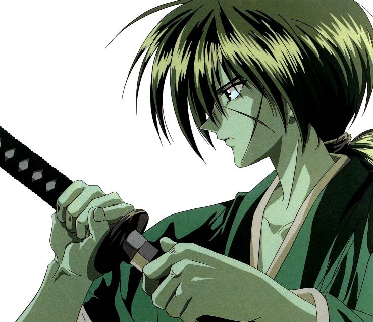

INTRODUCCION
Rurōni Kenshin: Meiji Kenkaku Romantan (るろうに剣心 -明治剣客浪漫譚-?) literalmente "Rurōuni Kenshin: El espadachín vagabundo —de la era— Meiji", conocido en España como Kenshin, el guerrero samurái y en Hispanoamérica como Samurái X, es un manga escrito e ilustrado por Nobuhiro Watsuki y cuya adaptación al anime fue dirigida por Kazuhiro Furuhashi. Ambientado en los primeros años de la era Meiji del Imperio del Japón, y también en los acontecimientos sucedidos en el tiempo Bakumatsu de la Dinastía Tokugawa. Su temática acerca de la paz, el amor y la redención ha impulsado su popularidad tanto en su país natal como internacionalmente. Himura Kenshin es el personaje principal que da nombre a la serie. Está basado en el personaje histórico de Kawakami Gensai y en otros personajes históricos como el rōnin Musashi Miyamoto. El manga fue publicado en la revista semanal Shōnen Jump de la editoria Shūeisha entre el #19 de 1994 y el #43 de 1999, y consta de 28 volúmenes en tankōbon, mientras que más tarde la editorial relanzó el manga en formato kanzenban con 22 volúmenes. Posteriormente, la historia del manga fue adaptada a una serie de anime que se emitió en Japón desde el 10 de enero de 1996 al 8 de septiembre de 1998 por la cadena televisiva Fuji Television finalizando con un total de 101 episodios. Además una película de animación y dos series de animaciones originales (OVA). El escritor Kaoru Shizuka ha escrito una novela ligera oficial titulada Viaje a la luna del mundo.2 La novela ha sido traducida por VIZ Media y distribuida en Estados Unidos y Canadá. Una película de imagen real se estrenó en 20123 y fue sucedida por dos secuelas estrenadas en 2014. Protagonizadas por Takeru Satoh y cuenta con la aprobación del propio Nobuhiro Watsuki. Se planea su proyección a nivel internacional. Warner Bros es la productora, mientras que Studio Swan realiza la película, con Keishi Otomo como director. Las versiones en español del manga fueron publicadas por Glénat en España, con el título de Rurouni Kenshin. El Guerrero Samurái. Crónicas de Un Experto Espadachín en la Era Meiji, en Argentina por Ivrea, titulada Rurouni Kenshin. La Historia de un Espadachín Meiji, y en México por Grupo Editorial Vid, en este último caso bajo el título de Samurái X. La serie ha recibido elogios y críticas por parte de varias publicaciones de manga, anime y otros. El manga ha vendido más de 55 000 000 copias en Japón convirtiéndose en una de las series de manga más vendidas de Shūeisha,4 mientras en el ranking de los mejores 100 animes de 2006 de TV Asahi (según una encuesta japonesa online), el anime de Rurouni Kenshin alcanzó el puesto 62.5 Una segunda adaptación de la serie de televisión de anime de Liden Films se estrenará en 2023.
VOLVER